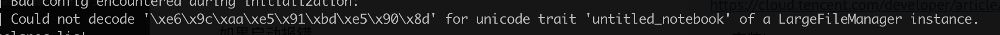

jupyterLab-安装其他内核支持
jupyterlab是jupyter notebook的一个升级版，界面更炫酷，而且同时支持R语言。
现在Rstudio已经成为R社区使用最广泛的集成编辑器，其在配合Rstudio公司开发的软件包使用上有天然的优势，如knitr、bookdown、blogdown、sparklyr、tidyverse等，让我们在数据导入、清洗、可视化、分析过程中少踩了不少坑。
然而，有时候我们也会发现，利用Rmarkdown进行探索性数据分析时，尤其是初学者，总是不断花费时间在文档编译上，而压缩了真正数据探索的时间。很多时候，我很羡慕python用户，因为他们拥有Ipython、jupyter notebook等工具，让我们一边分析数据，一边插入markdown文本，并且还能实时看到结果，这些特性R用户也可以实现吗？当然，这就是我今天推荐的jupyterlab 编辑器。
安装jupyterLab
首先我们要明白，jupyterLab是一个python包，所以要使用jupyterLab首先要配置python环境。对于普通用户，包括linux、win和Mac用户，建议直接下载anaconda发行版进行安装，这样免去了既要安装python又要安装其他包的麻烦，是最简洁的方法。
对于平时很少使用python的人来说，可能无法忍受anaconda全家桶式的安装模式，想更轻便的安装使用，那也很容易。
1.安装
Mac 和 Linux用户系统自带了python，可以直接使用pip install jupyterlab安装jupyterLab包。
win用户先在python官网下载安装python，然后使用pip install jupyterlab安装jupyterLab包。
2.运行
在终端输入jupyter lab即可以在默认浏览器中打开编辑器界面，若不能，请检查下python路径配置是否正确。
“咦，怎么只能选择python，R去哪了”，各位看官莫急，这是因为R端缺少必要的包，还不能和jupyter进行通信，等把这些包安装好进行配置后就可以了。
3.配置R
要把先前打开的jupyterLab程序全部关闭后再进行以下操作
#安装必要的依赖包
install.packages(c('repr', 'IRdisplay','evaluate', 'crayon','pbdZMQ','devtools','uuid', 'digest'))
#IRkernel包没有放在CRAN上，需要通过GitHub安装
devtools::install_github('IRkernel/IRkernel')
IRkernel::installspec() #确保jupyterLab能找到R解释器安装位置
4.再次在终端运行jupyter lab，选择R图标打开，你就可以在jupyterLab进行数据分析啦
jupyterLab的主要特性绘图函数自动插入图片ggplot2绘图完美支持
安装spark
以下主要是安装scala版本的notebook spark
(1)安装sbt（simple build tools）
下载sbt
wget https://dl.bintray.com/sbt/native-packages/sbt/0.13.11/sbt-0.13.11.tgz
下载完成后，配置相关PATH路径，命令sbt sbt-version验证。执行这个命令后，，就耐心等待吧，很久很久。。。。。。。因为要下载很多jar包。
新方案
https://toree.incubator.apache.org/docs/current/user/quick-start/
安装scala内核
安装说明
https://almond.sh/docs/quick-start-install
SCALA_VERSION=2.12.8 ALMOND_VERSION=0.9.1 #版本需要根据自己情况设置
#
curl -Lo coursier https://git.io/coursier-cli
chmod +x coursier
./coursier bootstrap \
-r jitpack \
-i user -I user:sh.almond:scala-kernel-api_$SCALA_VERSION:$ALMOND_VERSION \
sh.almond:scala-kernel_$SCALA_VERSION:$ALMOND_VERSION \
-o almond
#
./almond --install
IDE-sublime,vscode
1.sublime
sublime除了具有基本的文本编辑功能之外，还可以安装很多package来扩展其强大的功能。这里罗列出一些工作中经常能用到的
安装install package
点击菜单中的 “View”–“Show Console”，调出console面板，然后到https://packagecontrol.io/installation#st3
官网上的，复制出代码黏贴执行。执行完毕即可。
格式化json
打开 Sublime，command + shift + p -> Install package
搜索 Pretty JSON，安装
之后mac上用： command + ctrl + j 即可直接格式化显示。
比较diff
git
latex
安装latex
(1) 进入 http://www.tug.org/mactex/ 下载安装MacTeX.pkg
(2) Sublime按下“Command+Shift+P”打开命令托盘Command pallet，这一步也可以通过Tools下拉菜单完成。
在命令托盘里输入“Install Package”，按下Enter回车建。
完成之后，输入“LaTeX Tools”，找到这一项并回车安装。
退出并重启Sublime Text。
2.vs code
1 基础工具包安装pip
在安装package之前，首先要安装的就是包管理器。
1.pip
安装pip sudo easy_install pip
通过pip安装python包 pip install xxx
常见问题
# 当前版本
pip --version
# 版本升级(有些包安装需要依赖高级版本)
pip install --upgrade pip
## 升级某些包
pip install --upgrade SomePackage
# 安装包时候报错`time out`
pip --default-timeout=100 install xxx
## 指定安装目录
pip -t 目标目录 xxx
更新pip给出一个最简单的办法就是通过pip uninstall pip卸载pip，再用easy_install pip安装pip,这样安装的就是最新版本的pip了。
权限
在mac上安装包的时候，因为系统限制不让写到内容到系统目录里去。解决方法
- 重新安装一个自己版本的python，比如可以用ancoda安装
- pip安装的时候加入参数
pip install xxx --user，安装到当前用户目录下。
安装完成后还需要将该目录加到环境变量里才能使用
export export PATH=/Users/$your_name/Library/Python/2.7/bin/:$PATH
更新某个包时候报错
Cannot uninstall 'six'. It is a distutils installed project and thus we cannot accurately determine which files belong to it which would lead to only a partial uninstall.
解决办法：
pip install six --upgrade --ignore-installed six
当机器上有多个版本python，安装到指定的python版本中
pip install -t /home/work/zhenzhen/python2.7/lib/python2.7/site-packages BeautifulSoup4
2.brew
/usr/bin/ruby -e "$(curl -fsSL https://raw.githubusercontent.com/Homebrew/install/master/install)”
加速
pip install xxx -i https://pypi.tuna.tsinghua.edu.cn/simple/
Jupyter notebook
类似于r的markdown
GitHub 上也直接支持 Jupyter notebook 的渲染。借助此出色的功能，你可以轻松地共享工作。http://nbviewer.jupyter.org/ 也会提供 GitHub 代码库中的 notebook ，以及存储在其他地方的 notebook。
名称 Jupyter 由 Julia、Python 和 R 组合而成，早期的两个非 Python 内核分别是 R 语言和 Julia 语言
1.安装
- 如果安装anaconda 会自带
- 通过conda环境安装
conda install jupyter notebook，或者pip install jupyter notebook
# 启动
jupyter notebook
快捷键
在上方插入cell：a
在下方插入cell：b
剪切当前cell：x
删除当前cell：dd
撤销删除：u
上下：方向键 or jk (同vim)
扩展选中上下左右：shift+jk
当前cell转入markdown状态：m
当前cell转入代码状态：y
magic 关键字
Magic 关键字是可以在单元格中运行的特殊命令，能让你控制notebook 本身或执行系统调用（例如更改目录）
Magic 命令的前面带有一个或两个百分号（% 或 %%），分别对应行 Magic 命令和单元格 Magic 命令。行 Magic 命令仅应用于编写 Magic 命令时所在的行，而单元格 Magic 命令应用于整个单元格。
对于 Python 内核，可以使用 Magic 命令 %pdb 开启交互式调试器。出错时，你能检查当前命名空间中的变量。
2.转换 notebook格式
Notebook 只是扩展名为 .ipynb 的大型 JSON 文件。
转换格式的命令 nbconvert
jupyter nbconvert --to html notebook.ipynb #转成html
jupyter nbconvert --to markdown xxx.ipynb
目前支持的转换格式(https://nbconvert.readthedocs.io/en/latest/usage.html)
HTML,
LaTeX,
PDF,
Reveal.js HTML slideshow,
Markdown,
reStructuredText,
executable script,
notebook.
创建幻灯片
在 notebook 中创建幻灯片的过程像平常一样，但需要指定作为幻灯片的单元格和单元格的幻灯片类型。在菜单栏中，点击“View”（视图）>“Cell Toolbar”（单元格工具栏）>“Slideshow”（幻灯片），以便在每个单元格上弹出幻灯片单元格菜单。
#转换并在浏览器中展示
jupyter nbconvert notebook.ipynb --to slides --post serve
3.测试机上安装jupyter
https://cloud.tencent.com/developer/article/1147487
- 安装jupyter
- 生成密码 python -c "import IPython;print IPython.lib.passwd()"
- 修改配置文件
/home/work/.jupyter/jupyter_notebook_config.py
如果启动报错
socket.gaierror: [Errno -2] Name or service not known
可以加上自己的ip
jupyter notebook --ip=xxxx
jupyter lab --ip=xxx
4.其他工具
jupyter-lab
jupyter-lab 是jupyter-notebook的升级版，界面更加炫酷，也支持更多功能，强烈建议使用lab方式
colab
google 基于jupyter开发的存在在google driver上的网页版
https://colab.research.google.com/
本身功能上差不太多，主要是有search和share功能，查看别人分享的代码
一个简单的入门教程,在colab上你可以体验免费的GPU
https://github.com/xitu/gold-miner/blob/master/TODO1/google-colab-free-gpu-tutorial.md
Q: 将大文件发送的google drive
# 需要发送哪个文件？
file_name = "REPO.tar"
from googleapiclient.http import MediaFileUpload
from googleapiclient.discovery import build
auth.authenticate_user()
drive_service = build('drive', 'v3')
def save_file_to_drive(name, path):
file_metadata = {'name': name, 'mimeType': 'application/octet-stream'}
media = MediaFileUpload(path, mimetype='application/octet-stream', resumable=True)
created = drive_service.files().create(body=file_metadata, media_body=media, fields='id').execute()
return created
save_file_to_drive(file_name, file_name)
5.常见问题
Q1: 若import了自己写的外部模块，如果这个外部模块有更新，再次执行import，jupyter是不会重新导入的
https://blog.csdn.net/ybdesire/article/details/86709727
对于 Python2.x
import some_module
reload(some_module)
对于 Python 3.2 and 3.3:
import some_module
import importlib
importlib.reload(some_module)
对于 Python3.4+
import some_module
import imp
imp.reload(some_module)
方法2：
auto_load
https://codeday.me/bug/20181215/447675.html
Q2. jupyter lab 启动提示

应该是编码问题，暂时的解决方案https://github.com/jupyter/notebook/issues/2789#issuecomment-338380336
LANG=zn jupyter lab
这个问题后来查了下说是python2的bug，安装python3就不会出现这个问题。
Q3. 切换内核
很多代码都是python2写的，用pip3安装jupyter之后，想切换写内核。
https://www.cnblogs.com/Jeffiy/p/4861528.html
jupyter kernelspec list
Q4: jupyterlab 中的内容，可以通过右键点击复制下载链接得到一个url，通过该url可以直接在网页上展示该文件。注意该url后面有个 _xsrf=xxxx的标记。
如果重启了jupyterlab，这个标记也需要更新
Q5: 如果安装了不同的conda环境，想切换不同的环境运行
conda install nb_conda_kernels
Q6:在自己的docker环境下想运行jupyter
# 在docker环境中安装
pip install jupyterlab
# 配置
jupyter notebook --generate-config
6 好用的插件
https://blog.csdn.net/yh0vlde8vg8ep9vge/article/details/85333338

Copyright © 2015 Powered by MWeb, Theme used GitHub CSS.